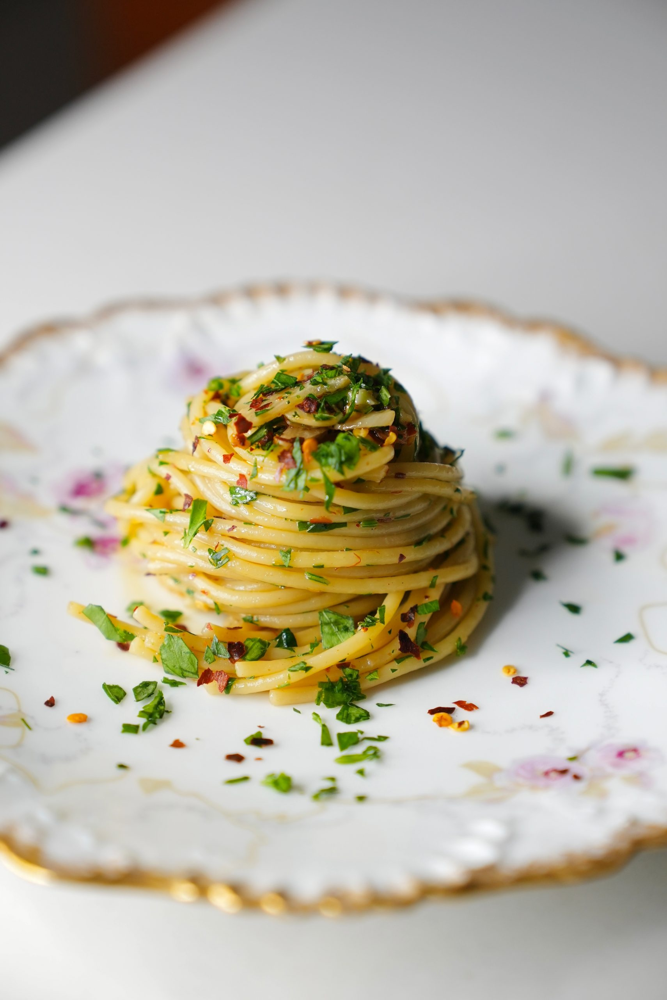

How to make Aglio Oglio Pasta

Description
Aglio e olio is a simple, classic Italian pasta that proves great food doesn't need many ingredients. Spaghetti is tossed with garlic gently sautéed in olive oil, a touch of chili flakes for warmth, and fresh parsley for brightness.
It comes together in the time it takes to boil the pasta, making it a perfect quick weeknight meal that still feels special.
Ingredients
- 400g spaghetti
- 100ml extra virgin olive oil
- 6 cloves garlic,thinly sliced
- 1 tsp red chili flakes
- Salt to taste
- A handful of fresh parsley, chopped
- 50g grated parmesan cheese
- Black pepper to taste
Steps
- Bring a large pot of salted water to a boil. Cook the spaghetti according to the package instructions until al dente. Reserve about 1 cup of the pasta water before draining.
- While the pasta cooks, heat the olive oil in a large pan over medium-low heat. Add the sliced garlic and cook gently, stirring often, until it turns light golden and fragrant — about 3-4 minutes. Be careful not to let it burn, or it'll turn bitter.
- Add the chili flakes to the pan and stir for about 30 seconds.
- Add the drained spaghetti directly into the pan with the garlic oil. Toss well to coat, adding a splash of the reserved pasta water to help the sauce cling to the noodles.
- Season with salt and black pepper to taste. Toss in most of the chopped parsley, saving a little for garnish.
- Serve immediately, topped with the remaining parsley and grated parmesan if using.
Home